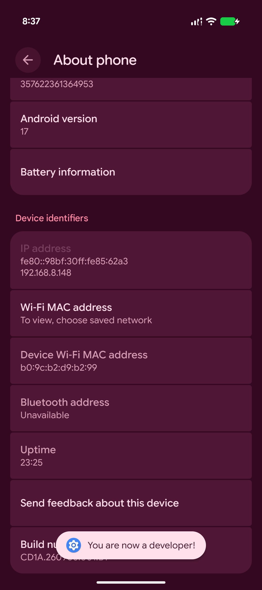
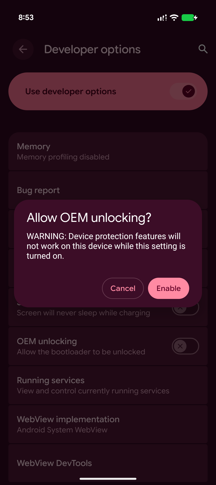
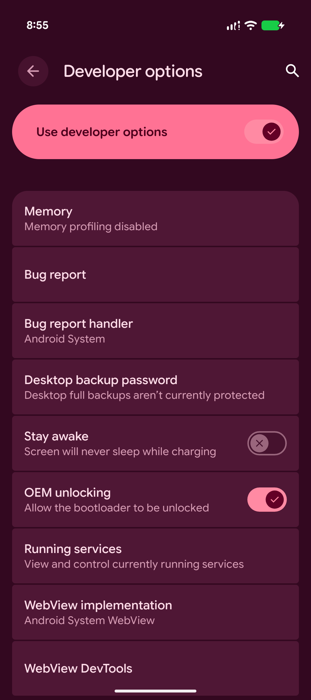
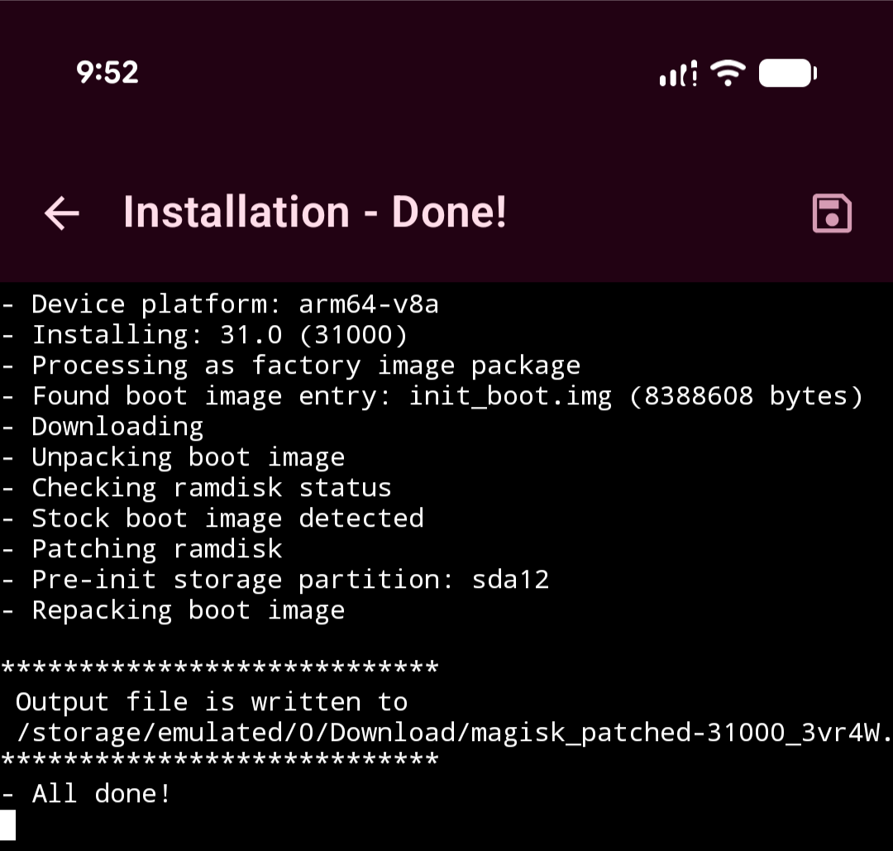
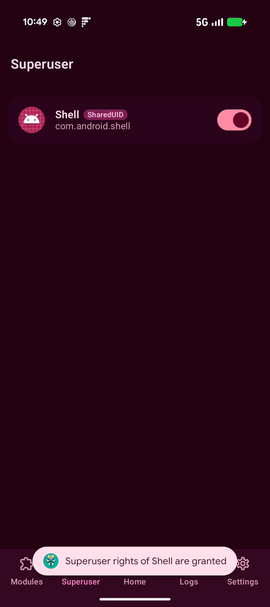

Rooting Pixel 11
This post details rooting a pixel 11 with Magisk. The following was done on a phone ordered through Google Fi shop. It is unknown to me if other sources of the phone allow bootloader unlocking.
Suggestion: Don't unlock the bootloader and root your personal device.
Prepare Phone
Update
Update to firmware of interest. Note the bootloader has an anti-roll back version that could prevent downgrading firmware.Enable Developer Mode
- Navigate: Settings --> About phone
- Click: "Build number" until prompt to enter pin
- Enter pin
- Toast message: "You are now a developer!"

Enable OEM Unlocking
- Navigate: Settings --> Developer options
- Click: OEM unlocking
- Enter pin
- Read warning then click "Enable"


Unlock Bootloader
WARNING: Data will be erased.
- Install on host: Platform-Tools
- Restart device, holding volume button down during restart
- Fastboot menu should be visible
- On host: fastboot devices
- Confirm serial number matches
- On host: fastboot flashing unlock
- On phone: Use volume buttons to change: "Do not unlock the bootloader" to "Unlock the bootloader"
- On phone: Press power button to trigger a reboot
- Debug menu should show: Device state: unlocked
- On phone: Press power button with option: Start
Each restart will display a warning regarding the bootloader being unlocked. Fastboot can be used to lock the bootloader.
Patch Firmware Image
Install Magisk
Install Magisk-v31.0.apk- Navigate: Settings --> Developer options
- Click: Enable USB debugging
- On host: adb install Magisk-v31.0.apk
Record build number
- Navigate: Settings --> About phone
- Long press "Build number" to copy
- Example: CD1A.260905.001.B1
Obtain link to firmware image
- Navigate: Factory Images for Nexus and Pixel Devices
- Locate codename for device
-
- Pixel 11: cubs
- Pixel 11 Pro: grizzly
- Pixel 11 Pro XL: kodiak
- Pixel 11 Pro Fold: yogi
- Locate desired build for associated device then copy link on phone
Create patched magisk image
- Open Magisk app
- Click: Install
- Click: Download and patch a file
- Paste: Link to firmware image

Download patched firmware image
- adb pull /storage/emulated/0/Download/magisk_patched-31000_3vr4W.img
Flash Patched Firmware Image
- Enter fastboot mode: Restart phone and hold volume button down
- Confirm serial number matches with: fastboot devices
- Flash: bloombit@Mac Downloads % fastboot flash init_boot magisk_patched-31000_3vr4W.img Sending 'init_boot_b' (8192 KB) OKAY [ 0.020s] Writing 'init_boot_b' OKAY [ 0.267s] Finished. Total time: 0.288s
- fastboot reboot
- Once phone reboots into new firmware open the magisk app to finish rooting
- Opening Magisk will download magisk over network
- Open downloaded Magisk, should prompt you to reboot to finish install
Pixel is now rooted!
Root Shell
- On host: adb shell
- On host: su
- On phone: Magisk should prompt you to grant root access to Shell
